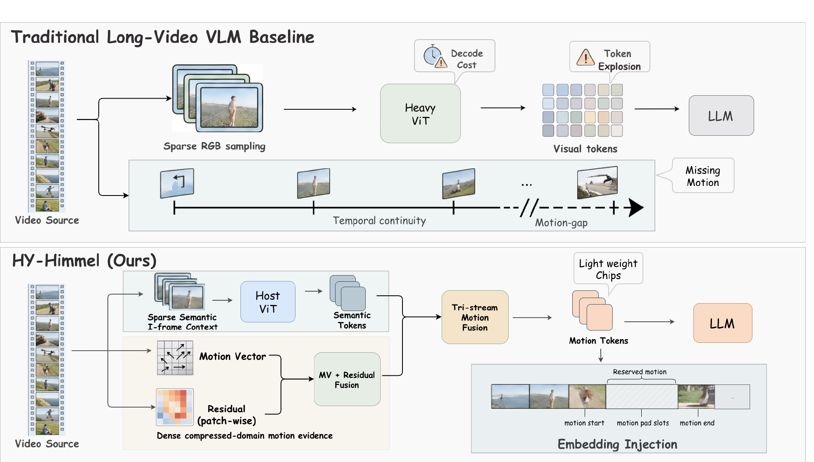
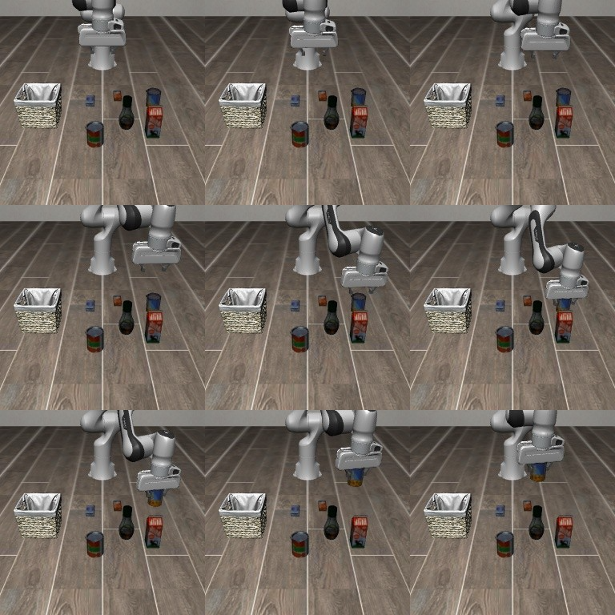
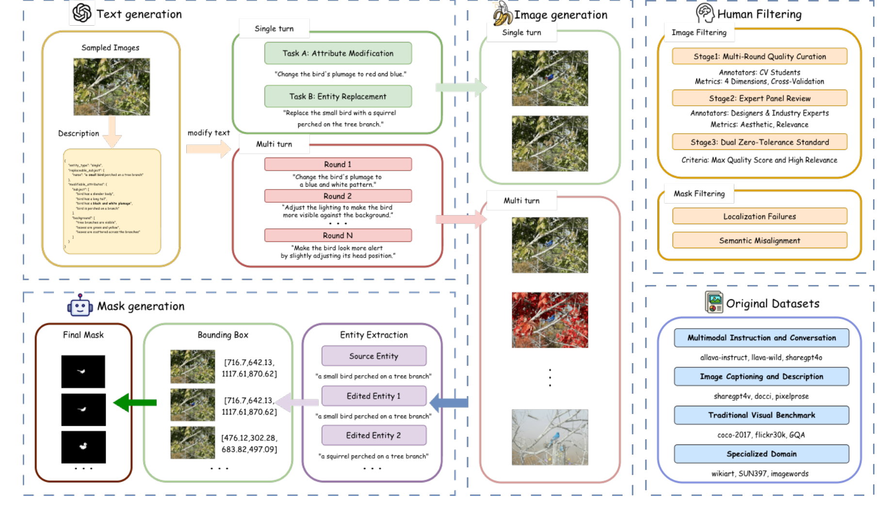

Multimodal AI · Video Understanding · Retrieval · ML Systems
Building reliable multimodal intelligence across models and systems.
I am Haopeng Jin, an undergraduate researcher at Beijing University of Posts and Telecommunications. I build multimodal systems for long-video understanding, open-world search, embodied reasoning, model post-training, and efficient training and inference.
Selected research
Projects and manuscripts

Technical report · First author
HY-Himmel
Sparse semantic anchor frames and interleaved RGB, motion-vector, and residual streams for efficient long-video understanding.
Read project details ↗
Ongoing · Embodied intelligence
Robo-Dopamine 2.0
OOD-aware temporal memory for robotic process reward modeling.
Explore ongoing work ↗
CVPR 2026 · Image editing
Omni IIE Bench
Practical evaluation of single-turn consistency and multi-turn coordination.
Read benchmark details ↗
Open-domain video retrieval
ShotFinder
Imagination-driven web search with adaptive multimodal shot localization.
Read project details ↗
Benchmark · Video memory search
RVMS-Bench
Long-video search from fragmented global, temporal, visual, and audio memories.
Read benchmark details ↗
Agent framework · Open web
RACLO
Recall–Search–Verify reasoning for real-world video retrieval and localization.
Read method details ↗About
Research-minded engineering, grounded in real workloads.
My work connects representation learning, temporal reasoning, retrieval, embodied intelligence, model post-training, and systems engineering. I care about the full path from data design and training objectives to evaluation and deployment.
Let’s connect